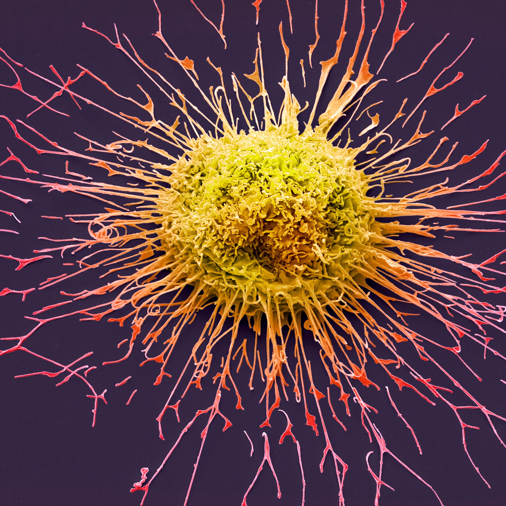

Qu'est ce que le cancer

Le cancer est une maladie caractérisée par la prolifération incontrôlée de cellules, liée à un échappement aux mécanismes de régulation qui assure le développement harmonieux de notre organisme. En se multipliant de façon anarchique, les cellules cancéreuses donnent naissance à des tumeurs de plus en plus grosses qui se développent en envahissant puis détruisant les zones qui les entourent (organes). Les cellules cancéreuses peuvent également essaimer à distance d'un organe pour former une nouvelle tumeur, ou circuler sous forme libre. En détruisant son environnement, le cancer peut devenir un réel danger pour la survie de l'être vivant.
La cellule, définitions et notions de base
Le corps humain est complexe et présente, globalement, 3 niveaux d'organisation qui sont :
- les organes (par exemple, le cœur, le cerveau, les poumons, etc.) qui ont tous un rôle différent et souvent fondamental dans le fonctionnement du corps
- les tissus qui composent les organes (par exemple, les muscles, les glandes, etc.) et structurent le corps (le squelette, la peau)
- les cellules, enfin, qui sont l'unité de base des tissus, et qui présentent elles même une organisation microscopique et complexe.
Véritables petites usines autonomes, les cellules cohabitent et communiquent de façon harmonieuse afin de préserver l'architecture et les fonctions propres à chaque organe ou système. Elles sont constituées :
- d’une enveloppe : membrane équipée de petites structures (récepteurs) permettant la communication avec l’environnement
- de différents équipements internes qui sont essentiels au maintien en vie de la cellule et lui permettent de jouer son rôle dans le corps
- d’un noyau situé également à l'intérieur de la cellule et qui contient toute l'information génétique que la cellule utilise pour savoir comment fonctionner : 46 chromosomes organisés en 23 paires et constitués de « gènes ».
Qu'est-ce qu'une cellule cancéreuse ?
C'est une cellule qui devient totalement indisciplinée, suite à une agression ou un dommage et liée à une modification de la structure d’un gêne ; c’est ce qu’on appelle une « mutation ». Parfois, l'agression est violente et courte. Le plus souvent elle est de faible intensité, mais s'étend sur une longue période. Cette altération intime de la cellule constitue la base même de tous les cancers. La cellule n'arrête plus de se multiplier, et reste en vie dans un organe où habituellement les cellules meurent et se renouvellent rapidement. Cette prolifération va aboutir à la formation de la tumeur, qui, en se développant arrive à détruire les cellules normales avoisinantes
Comment passe-t-on d'une cellule cancéreuse à un cancer ?
Une cellule cancéreuse se multiplie beaucoup : elle commence à former un regroupement de cellules. Ces cellules ne ressemblent plus beaucoup aux autres cellules voisines : leur noyau est plus gros, traduisant leur intense activité, parfois leur taille est également plus grande, voire énorme. Les premiers regroupements de cellules sont généralement sans danger, restent "sous contrôle" (ne se développent pas). Ils sont parfois même détruits par le système immunitaire. Il faut un regroupement d'environ 100.000 cellules pour que l'on commence à parler de tumeur. Une tumeur devient dangereuse (maligne) lorsqu'elle commence à "s'infiltrer", c'est-à-dire que les cellules cancéreuses au lieu de rester groupées les unes aux autres, commencent à former des extensions vers des zones voisines. Cette infiltration devient néfaste car les cellules cancéreuses commencent à détruire les cellules normales, et mettent en danger le fonctionnement de l'organe.
Qu'est-ce qu'une métastase ?
La cellule cancéreuse peut se "détacher" de la tumeur, migrer dans une autre partie du corps (par le sang ou par la lymphe) et s'installer dans un autre endroit, voire un autre organe pour créer une nouvelle tumeur. Les tumeurs créées dans un endroit différent sont appelées métastases.
En combien de temps se met en place un cancer ?
Le passage d'une cellule cancéreuse à une tumeur prend beaucoup de temps : plusieurs années. Ainsi, on sait qu'un cancer dépisté aujourd'hui correspond à un développement de cellules cancéreuses qui s'est étalé, de façon invisible, sur plusieurs années.
Existe-t-il différentes formes de cancer ?
On peut dépister un cancer à différents stades. En général, ne sont "visibles" donc détectables que les tumeurs. Certaines peuvent être non dangereuses mais devront être suivies "de près". Par contre, celles qui "envahissent" les zones environnantes doivent souvent être traitées le plus rapidement possible. Enfin, pour les cancers des cellules du sang comme les leucémies, il n'existe pas de tumeur puisque les cellules du sang se déplacent librement dans le sang, mais dans ce cas les cellules cancéreuses n'assurent plus les fonctions vitales habituelles.
Comment un cancer se révèle-t-il ?
Suivant le type du cancer, la personne malade peut être alarmée par de multiples symptômes :
- apparition d’une petite « boule » anormale qui grossit progressivement
- ganglion anormalement gros
- modification progressive de la voix
- troubles du transit
- perte inexpliquée de poids
- ...